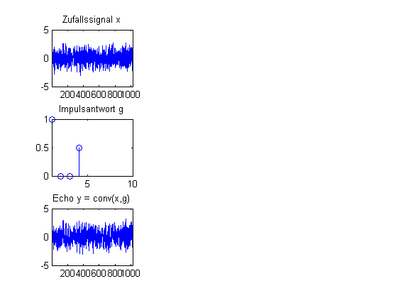

Contents
SpektraleSchätzung.m
B.Wir 20.9.02, ver.1.1 9.5.2012
close all
clear
clc
(i) Erzeugung eines echobehafteten Zufallssignals
mit 1024 Werten
N =1024; % Anzahl der Werte x_k=randn(1,N); g_k= [1 0 0 0.5]; y_k=conv(x_k,g_k,'same'); % oder auch so % y_k =filter(1,g_k,x_k); % Später: zu (v) % t = 1:N; % x_k = sin(2*pi*( 1/5)*t); % y_k = x_k + 2 * randn(size(x_k))+ 1; figure(1) subplot(3,3,1); plot(x_k); title('Zufallssignal x'); xlim([1 N]); subplot(3,3,4); stem(g_k); title('Impulsantwort g'); xlim([1,10]) subplot(3,3,7); plot(y_k); title('Echo y = conv(x,g)'); xlim([1 N]);
(ii)Periodogramm: Berechnen Sie das Betragsquadrat der Fourier-Transformierten
des Signals, der Kanalimpulsantwort und des Echosignals. Begründen Sie die auftretende Modulation durch eine quantitative Rechnung. (Hinweise: g_k = [ 0.5 0 0 0.5] + [ 0.5 0 0 0 ]) Nennen Sie einen prinzipiellen Nachteil der Spektralschätzung mit dem Periodogramm.
% X_nu = fft(....) .* conj(fft(....))/N; % G_nu = fft(....,N) .* conj(...))/N; % Y_nu = ................; % % subplot(3,3,2); plot(X_nu); title('Periodogramm: 1/N | fft(x) |^2'); xlim([1 N]); % subplot(3,3,5); plot(G_nu); title('Periodogramm: 1/N | fft(g) |^2'); xlim([1 N]); % subplot(3,3,8); plot(Y_nu); title('Periodogramm: 1/N | fft(y) |^2'); xlim([1 N]); % Antworten: % % %
(iii) Welch-Methode: Unterteilen Sie die Signale aus (ii)
in Abschnitte der Länge L = 128 mit 50% Überlapp, und berechnen Sie die Mittelwerte der Periodiogramme.
L = 128 x = x_k(1:L); y = y_k(1:L); Welch_x = (fft(x).*conj(fft(x)))/L; Welch_y = (fft(y).*conj(fft(y)))/L; i_anz = 0; for i = fix(L/2):fix(L/2):(N-L) x = x_k(i:i+L-1); y = y_k(i:i+L-1); Welch_x = Welch_x+ ...........; Welch_y = Welch_y+ ...........; i_anz= i_anz+1; end Welch_x = Welch_x/i_anz; Welch_y = Welch_y/i_anz;
subplot(3,3,3); plot(Welch_x); title('Welch(x)'); hold on;xlim([1 L]); subplot(3,3,9); plot(Welch_y); title('Welch(y)'); hold off;xlim([1 L]); Antworten:
(iv) AKF-Schätzung
akf_x = xcorr(.......); akf_y = xcorr(.....);
figure(2); subplot(3,2,1); plot(akf_x);title('AKF(x)');xlim([1 2*N]); subplot(3,2,3); plot(akf_y);title('AKF(y)');xlim([1 2*N]); subplot(3,2,5); plot(abs( fft(akf_y))); title('abs[ FFT (AKF (y) ]'); xlim([1 2*N]);
% L = 100 % x = x_k(1:1+L); % y = y_k(1:1+L); % AKF_mittel_x = (xcorr(x,x)/L); % AKF_mittel_y = (xcorr(y,y)/L); % i_anz = 0; % for i = fix(L/2):fix(L/2):(N-L) % x = x_k(i:i+L); % y = y_k(i:i+L); % AKF_mittel_x = AKF_mittel_x + ...; % AKF_mittel_y = AKF_mittel_y + .....); % i_anz= i_anz+1; % end % AKF_mittel_x = AKF_mittel_x/i_anz; % AKF_mittel_y = AKF_mittel_y/i_anz; % subplot(3,2,2); plot(AKF_mittel_x);title('AKF_{mittel}(x)');xlim([1 2*L]) % subplot(3,2,4); plot(AKF_mittel_y);title('AKF_{mittel}(y)');xlim([1 2*L]) % subplot(3,2,6); plot(abs( fft(AKF_mittel_y))); title('abs[ FFT (AKF_{mittel}(y) ]');xlim([1 2*L])
(v) Spektralschätzung für Sinussignal
t = 1:N; x_k = sin(2*pi*( 1/5)*t); y_k = x_k + 2 * randn(size(x_k))+ 1;